Wise Teams · Manual de brand · v1
ManualulWise Teams
Cum arată și cum sună Wise Teams: un singur loc cu regulile, ca rapoartele, articolele, postările și slide-urile să pară făcute de aceeași mână.
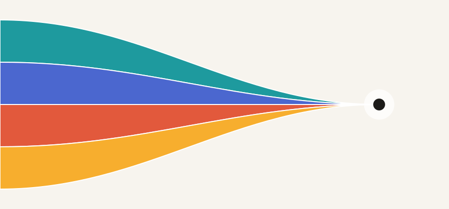
Am pornit de la ce există deja: limbajul vizual din rapoartele „Drum critic”, wordmark-ul „wise” și textele lui Alex (articolul „The 4 Layers of How a Team Works”, postările de workshop). N-am inventat un logo nou. Ce e propunerea mea poartă eticheta propunere; ce sunt cuvintele lui Alex, Alex.
1 · Esența
Ce e Wise Teams, pentru cine, de ce
Ce face Alex
„To bring the knowledge of how a team works into the team itself, helping people understand their dynamics, identify what needs attention and make progress at each stage of their journey.”
Articolul „The 4 Layers of How a Team Works”, finalul.
Pentru cine Alex
„Manageri de manageri care își doresc echipe autonome, echipe în care, din interacțiunea dintre oameni, apare mai mult decât suma contribuțiilor.”
Postarea de workshop. Publicul mai larg: directori și antreprenori care vor echipe autonome.
Convingerea Alex
„Improving a team doesn't start with fixing people. It starts with understanding the system they create together.”
Același articol.
Fraza-semnătură propunere
„Results are what everyone sees. How a team works is what you build.”
E fraza lui Alex din articol. Propun s-o folosim ca semnătură constantă (bannerul LinkedIn, finalul rapoartelor). În română, doar după ce o formulează Alex.
Ce oferă
Drumul
Metodologia: de la Container, prin patru etape, la o echipă emergentă.
Chestionarul
16 comportamente de echipă, pe patru capabilități.
Drum critic
Raportul pentru o echipă: unde e pe drum și primii pași.
Workshop-uri
Restrânse, ca schimb de perspective cu echipele.
2 · Wordmark
„wise”, cu cele trei noduri
Semnul există deja: cuvântul „wise” în portocaliu, cu un mic graf de trei noduri legate. Graful e sămânța rețelei care crește pe drum (capitolul 5).
Reconstruit
Semnul din acest manual e redesenat după rapoarte, cu Avenir Next în loc de Poppins. Până primim fișierul sursă (SVG), îl folosim doar în draft-uri, nu în materiale care pleacă.
Cum se folosește
- Literele în portocaliul Wise, graful în cerneală. Pe crem sau pe alb.
- Sus pe fiecare material: în dreapta pe copertă, în stânga pe paginile interioare (ca în rapoarte).
- Spațiu liber în jur: cel puțin înălțimea literei „w”.
- Mărime minimă: 24 px înălțime pe ecran, 10 mm pe hârtie propunere. Sub ea, nodurile se lipesc de „e”.
- Nu îl recolorăm în culorile capabilităților, nu îl întindem, nu îi punem umbră sau contur, nu îl așezăm direct pe aura colorată.
Două ajustări propunere
Nu schimbă semnul. Acoperă două locuri unde azi nu avem o variantă. Decid Alex și Andreea.
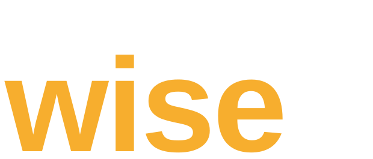
A · Pe fundal închis
Literele rămân portocalii (contrast 9 : 1 pe cerneală), graful devine alb. Pentru slide-urile de întrebare și pentru video.
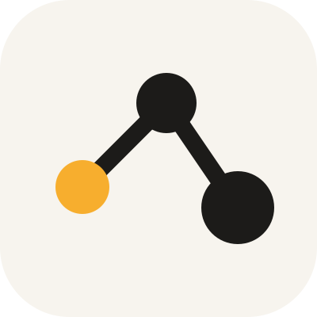
B · Monograma
Doar graful, cu primul nod în portocaliu. Pentru avatarul de Substack și LinkedIn și pentru favicon, unde „wise” devine ilizibil.
3 · Culori aproximative
Hârtie, cerneală și patru culori cu sens
Valorile sunt citite din rapoartele Wise Teams, nu dintr-un fișier oficial. Le corectăm când primim paleta sursă. Fiecare culoare de capabilitate are două valori: una pentru forme, una (mai închisă) pentru text.
#F7F4EE#FFFFFF#EDE8DF · linii #E4DDD2#1C1B19 · 15,7 : 1#5E5A55 · 6,2 : 1#F7AE2E · text #8F5500Contrastul e calculat pe crem. Portocaliul Wise are doar 1,7 : 1 pe crem: e bun pentru semn și forme mari, niciodată pentru text sau ca singur purtător al unei informații.
4 · Culorile pe capabilitate
O capabilitate are o culoare, peste tot
Culoarea nu decorează: spune despre ce capabilitate vorbim. Aceeași culoare pe drum, în hartă, în carduri, în postări.
Flow
Flux
Cum circulă munca, informația și deciziile.
#1E9A9E forme · #16777A text (4,8 : 1)
Trust
Încredere
Cât adevăr poate duce echipa.
#4B67CF forme · #3A4FC6 text (6,1 : 1)
Delivery
Livrare
Aliniere la început, consecvență după.
#E2593C forme · #B83A28 text (5,2 : 1)
Anticipation
Anticipare
Loc pentru ce urmează.
#F7AE2E forme · #8F5500 text (5,5 : 1)
| Pe drum | Română | Engleză (Substack) | Culoarea |
|---|---|---|---|
| Înainte de drum | Containerul | The Container | nisip și cerneală |
| 1 | Suntem aliniați | Getting aligned | Livrare |
| 2 | Avansăm eficient | Moving efficiently | Flux Încredere |
| 3 | Livrăm consecvent | Delivering consistently | Livrare |
| 4 | Construim viitorul | Building the future | Anticipare |
| Destinația | O echipă emergentă | An emergent team | toate patru, legate între ele |
Așa
- Livrarea apare de două ori pe drum, cu aceeași culoare.
- Ordinea drumului se arată în imagine (numere, drum), nu se anunță în text.
- Textul colorat folosește doar valoarea „text”; formele mici portocalii au alături o etichetă în cerneală.
- Alb pe culoare doar la text mare și bold; chip-urile cu text alb folosesc valoarea „text”.
Nu așa
- O culoare de capabilitate folosită „pentru că arată bine” pe un subiect care nu e al ei.
- Al cincilea accent. Paleta are patru culori și atât.
- Roșul Livrării ca semn de alarmă: e o capabilitate, nu o notă proastă.
5 · Tipografie
Poppins, cu Avenir Next ca rezervă
O singură familie, în greutăți foarte diferite. Bold dens pentru titluri, regular aerisit pentru text, subțire doar pe coperți.
Drumulechipei.
Unde sunteți pe drum acum?
Trei pași care pornesc de la ce se vede deja în răspunsurile voastre.
Cât adevăr poate duce echipa
Capacitatea de a trece prin diferențe fără să strice relațiile care fac colaborarea posibilă.
Ce observăm / Echipa exemplu
workshop întărim
Rezerva
"Poppins", "Avenir Next", Avenir, "Helvetica Neue", Arial, sans-serif
Poppins e un font gratuit (licență OFL, Google Fonts). Nu e instalat pe calculatorul echipei, deci toate randările de aici sunt în Avenir Next, cea mai apropiată geometrie de pe Mac. Descărcarea lui o facem doar cu acordul lui Alex.
Reguli
- Titlurile bold, niciodată subțiri (subțirele e doar pe primul rând de copertă).
- Textul nu coboară sub 16 px pe ecran; etichetele pot avea 13 px.
- Pe imagini de social, textul are cel puțin 46 px în sursa de 1456 px (pe telefon se vede la un sfert).
- Fără italic decorativ, fără sublinieri.
6 · Elemente grafice
Drumul, rețeaua, benzile, cardurile
Patru elemente, toate venite din metodologie. Fiecare înseamnă ceva; niciunul nu e decor.
Drumul
O bandă de nisip cu linie punctată, care șerpuiește de la Container la destinație. Fiecare etapă e o oprire: disc alb, inel de nisip, arc în culoarea capabilității, număr într-un cerc negru. Containerul e un cadru punctat cu oamenii încă nelegați.
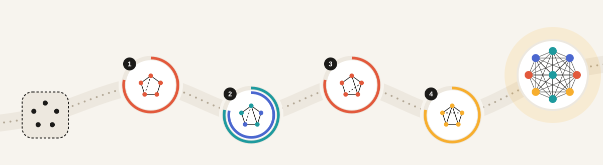
Rețeaua care se leagă tot mai mult
Pornește din graful wordmark-ului (trei noduri). Pe drum, cinci oameni se leagă tot mai mult; o legătură punctată e una care abia se formează. La destinație, toți sunt legați cu toți. E singurul fel în care arătăm progresul fără cifre.
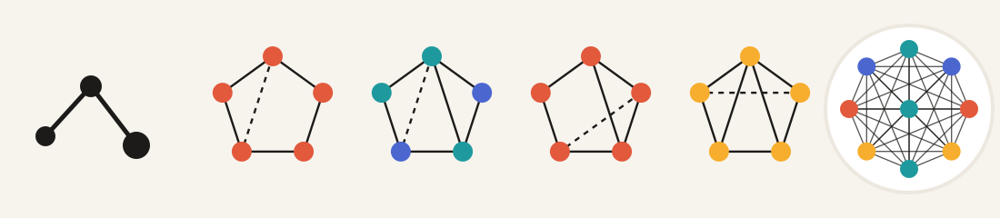
Benzile
Cele patru capabilități care se adună într-un punct: o echipă emergentă. Doar pe coperți și bannere, una pe material. Ordinea de sus în jos: Flux, Încredere, Livrare, Anticipare.
Cardurile și aura
Conținutul stă pe carduri albe, plate, cu colțuri de 24–28 px, fără contur și fără umbră. Aura (petele moi în culorile capabilităților) apare doar pe coperți, în spatele benzilor sau al rețelei.
Sticla e un finisaj, nu fundația: un singur card de sticlă, doar peste aură, cu alb de cel puțin 86 %, ca textul să rămână AA în cel mai rău punct. Fără sticlă pe paginile de raport și pe slide-urile de conținut.
7 · Voce și ton
Serios, direct, cu nuanță
Mai serios decât contul personal al lui Alex. Spunem mecanismul în cuvinte de zi cu zi, fără să acuzăm pe cineva și fără să ne lăudăm. Regulile complete sunt în skill-ul copywriting, lecțiile din 25–26.11.
Pe scurt
- Fără emoji. Singura excepție văzută în modelele lui Alex: data, locul și locurile unui eveniment (de confirmat).
- „Noi” = Alex și Andreea. Andreea apare cu numele întreg.
- Substack în engleză; LinkedIn, rapoartele și workshop-urile în română.
- Un capitol de articol începe cu un singur Key insight: mecanismul, nu rezumatul.
- Invităm, nu insistăm.
Bune (din textele lui Alex)
- „Ce se întâmplă, de fapt, în echipele de manageri?”
- „Încrederea rămâne puțin în urmă.”
- „Mai degrabă pe hol decât în ședință.”
- „Răspunderea urcă, încet, înapoi la lider.”
- „Agreement in a meeting doesn't necessarily mean alignment.”
- „Nu venim cu răspunsuri prefabricate.”
- „Dacă doriți să participați, scrieți-mi un mesaj.”
De evitat (respinse de Alex)
- Afirmații nedovedite despre noi: „zece ani cu echipe”.
- Anecdote inventate: „am auzit fraza asta de la lideri foarte buni”.
- Metafore lungite pe mai multe rânduri: „harta o avem, traficul de azi nu”.
- Ordinea spusă în cuvinte: „each stage unlocks the next”.
- Formule LinkedIn: „dacă te regăsești”, „suntem gata să împărtășim”.
- Calcuri: „dacă vreți să fiți în cameră”.
- Promisiuni de timp despre schimbare.
Testul unui rând: aș spune asta cu voce tare, așa, unui director, la o cafea? Și: ar putea scrie rândul ăsta oricine altcineva? Dacă da, îl rescriem.
8 · Cum se deosebește
Wise Teams, BEMORE și Alex
Trei identități care nu se amestecă. Un material poartă un singur brand.
| Wise Teams | BEMORE (și site-ul lui Alex) | Contul personal al lui Alex | |
|---|---|---|---|
| Senzația | Hârtie și cerneală: un raport bine făcut | Lumină și sticlă peste gradient | Vocea lui, pe Substack-ul și LinkedIn-ul lui |
| Fundalul | Crem cald, carduri albe plate | Lumină, Ceață, gradientul Sora | Ce cere platforma |
| Litera | Poppins, titluri bold dense | Sora subțire (niciodată bold) + Inter Tight | – |
| Culoarea | Are sens: o culoare = o capabilitate | Atmosferă: gradientul cer, lavandă, piersică | – |
| Simbolul | Drumul și rețeaua de noduri | Obiectele-simbol, lentila | – |
| Sticla | Doar un card, doar pe copertă | Pe navigare și carduri, peste tot | – |
| Vocea | „Noi”, serios, fără emoji, nuanțat | Cald, permisiv, „atelier de învățare” | „Eu”, emoji ca marcaje, „Let's imagine this” |
| Semnătura | Wordmark-ul „wise”; Alex și Andreea cu numele | „BEMORE Learning Studio” / „Alex · Atelier de învățare” | Alexandru Molea |
9 · Mock-up-uri
Brandul aplicat
Șase materiale, cu textele din modelele lui Alex. Nicio dată reală: raportul e o pagină de exemplu, iar contactele sunt înlocuite cu [paranteze].
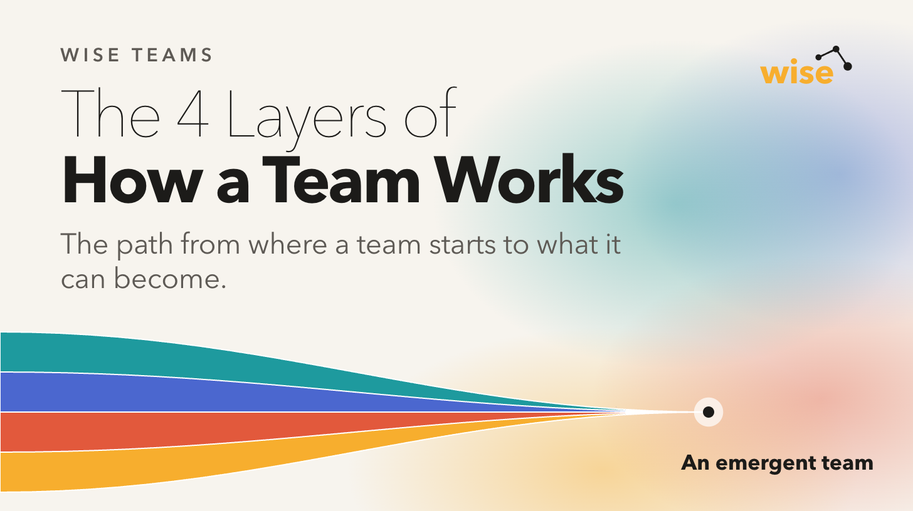
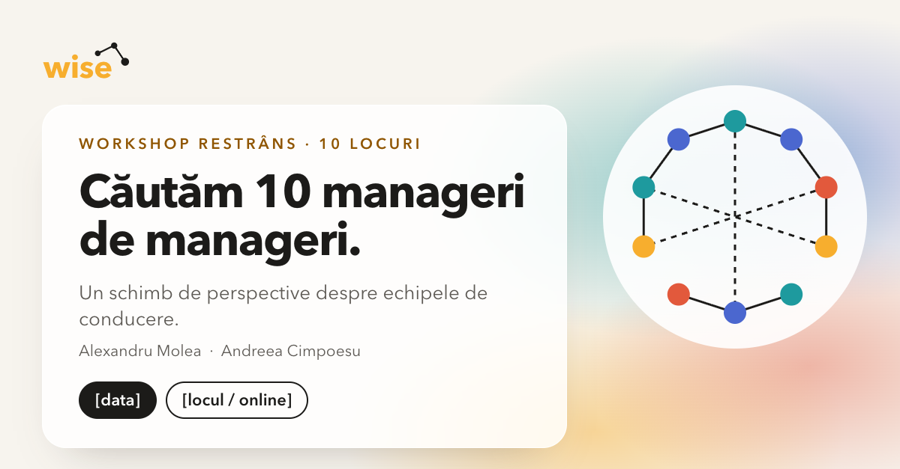
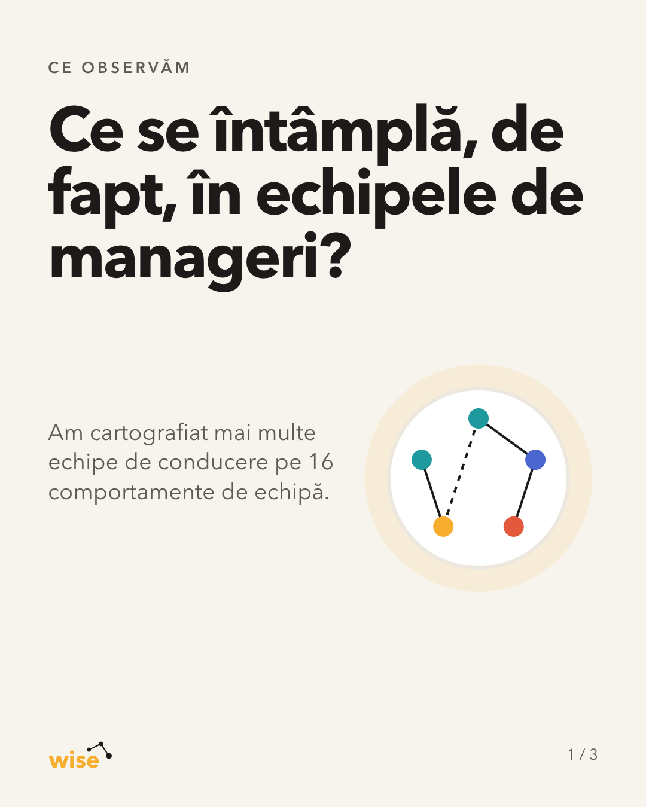
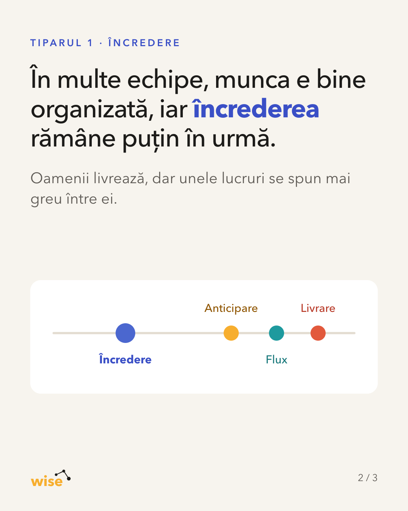
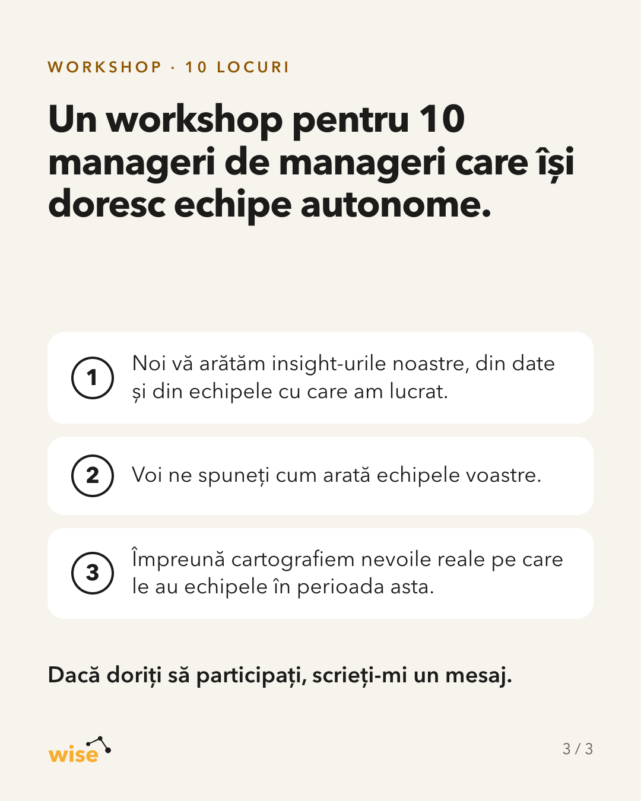
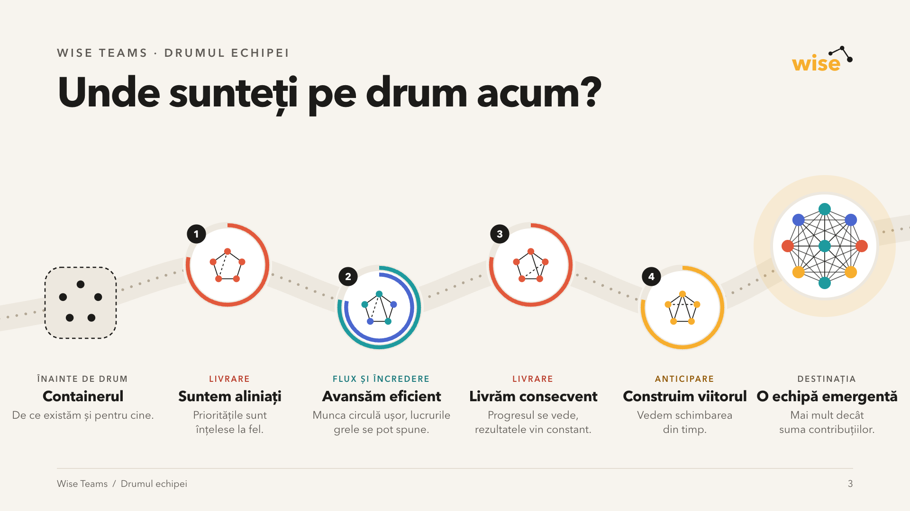
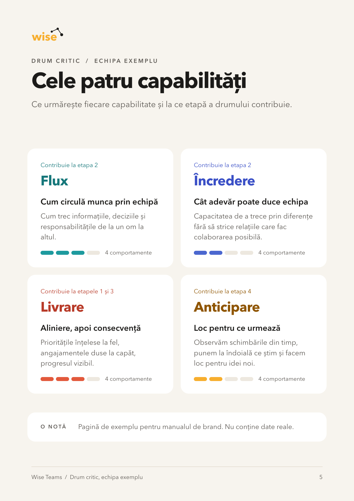
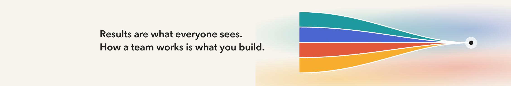
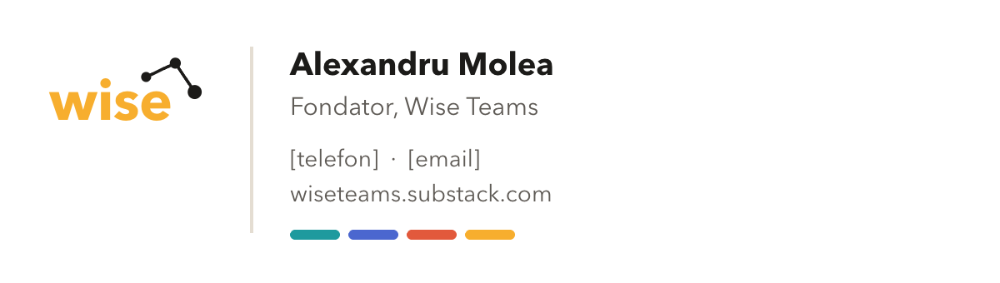
Sursa tuturor: gen.mjs din acest folder (culorile și textele într-un singur loc). node gen.mjs reface elementele și PNG-urile.
10 · De decis
Ce hotărăsc Alex și Andreea
- Numele public. Wordmark-ul spune „wise”, rapoartele și Substack-ul spun „Wise Teams”, Alex îi spune și „The Wise”. Care e numele pe care îl scriem?
- Culorile oficiale. Aveți paleta sursă (hex) de la cine a făcut wordmark-ul și rapoartele? Până atunci, valorile de aici sunt aproximative.
- Fontul. Poppins rămâne fontul Wise Teams? Dacă da, îmi dați acordul să-l descarc (gratuit, licență OFL), ca randările să iasă exact.
- Wordmark-ul în fișier sursă. Un SVG sau PDF vectorial al semnului, ca să nu mai folosim reconstrucția.
- Cele două ajustări propuse. Varianta pe fundal închis și monograma pentru avatar: da, nu sau altfel.
- Fraza-semnătură. Folosim „Results are what everyone sees. How a team works is what you build.” ca semnătură constantă? Și cum o spuneți în română?
Note
- Pagina Substack
wiseteams.substack.comare încă tema implicită (accent portocaliu Substack) și descrierea „My personal Substack”. Când decideți, tema se poate trece pe crem și portocaliul Wise; schimbarea e publică, deci o face Alex. - În căutări, „Wise” singur duce la compania de plăți cu același nume. „Wise Teams” scris întreg, lângă semn, ajută să nu fim confundați.